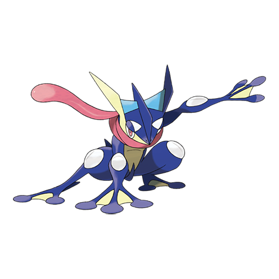

ゲッコウガの弱点（2倍）
でんき くさ かくとう むし フェアリー
#658 · みず／あく · しのびポケモン · 第6世代
しのびポケモンで、この図鑑でここまで扱ってきたなかでは最速の1匹。みず／あくの複合タイプに種族値合計530。先に動いて、捕まらないことだけを目的に組まれています。

BST 530
特性：げきりゅう · へんげんじざい（隠れ特性） · 進化段階：最終
18タイプすべての相性表は、 タイプ相性表.
でんき くさ かくとう むし フェアリー
ほのお みず こおり ゴースト あく はがね
エスパー
ポケモン図鑑は拡充中です。こちらのページは公開済みです。
ポケモンのデータと豆知識
ゲッコウガは全国図鑑No.658、第6世代のしのびポケモンです。みず／あくの複合タイプに種族値合計530。ラインの最終進化で、入り口はゲコガシラだけで、その先はありません。通常特性はげきりゅう、隠れ特性の枠にはへんげんじざいが控えています。3段階、ひとつの地方、そしてアニメで1つの章が作られるほど人気の高いデビューでした。
守りの面は「鉄壁」ではなく「バランス型」です。弱点が5つ（でんき・くさ・かくとう・むし・フェアリー）ある一方で、耐性も6つ（ほのお・みず・こおり・ゴースト・あく・はがね）あり、エスパーは完全無効。どれも珍しくなく、どれも脆くない。両側がきれいに並んでいます。目玉はエスパーの無効で、攻撃タイプ1つ分を丸ごと受け止められます。
みずとあくはきれいに補い合います。みずはほのお・こおり・はがねの相性をやわらげ、あくはみずタイプを狙ってくるエスパーの技を受け流します。代償は、よく使われる攻撃タイプに散らばった弱点5つ。だから守りは「世界に耐える」ためではなく、「危ない場所に立たない」ためのものになります。このカードの両面はどちらも攻撃タイプが本業で、守りは副作用にすぎない。そこが面白いところです。
種族値は「何よりも先に動く」ために組まれています。すばやさ122が看板の数字で、そこにたどり着いたときの仕事をとくこう103が用意します。残りはわざと薄く、ぼうぎょ67にとくぼう71。この数字が試されるターンに、勝負を持ち込まないことが計画です。
6つの数字を並べます。HP72、こうげき95、ぼうぎょ67、とくこう103、とくぼう71、すばやさ122。すべてが最後の数字に集まっていて、122はカードの他の数より一段上。この型は「そこ以外に立たなくて済む」ための賭けです。ぼうぎょ67ととくぼう71は正直なコストで、流れ弾は受けられても本命は受けられません。だから攻撃は片方向に保つ。それが基本です。
122あれば速い車線はこのポケモンのものです。出会った相手のほとんどはゲッコウガより後に動きます。これだけ軽いカードでは、先手を取ることが生存計画そのものになります。ラインの最終進化として530を背負い、ゲコガシラの405から大きく飛んで、530は最終進化の平均509あたりにちょうど乗ります。すばやさを伸ばし、余裕があればぼうぎょを補う。あとは計画どおりです。しかもこの跳ね方は本物で、御三家のラインがほぼすべてを最後の一歩に残した形になっています。
実戦では弱点リストは5つ並びますが、大半は対処できます。野生でよく出会うのはでんきとくさなので、ここは計画に組み込めます。かくとう・むし・フェアリーは、来ると分かっている特定の戦いで顔を出す程度です。安全側では、ほのお・みず・こおり・ゴースト・あく・はがねがすべて半分で、エスパーは何も通しません。耐性6つと無料の交代先は、紙耐久のアタッカーとしては良い食生活です。
目安はこうです。みずかあくで受けられる相手には積極的に出し、でんきとフェアリーの技からは遠ざけ、2発目を受けさせることは絶対にしない。これは一撃離脱の専門家で、壁役のクラブの会員ではありません。相性を正しく読めば、出た瞬間に勝負が決まります。読み違えれば、薄い耐久が答えを出してしまいます。交代は習慣ではなく毎回の計画として扱えば、あとは速さが仕事をしてくれます。
ヌズロックで問われるのは、ごくシンプルです。次のルートを生き延びて、借りを返せるのか。実際に回してみるならこちらで ヌズロック編成、代わりのポケモンは ランダム選出 道の途中で枠が空いたときにも使えます。2つの候補が同じに見えたら、 ポケモンルーレット が勝者を選びます。完成したパーティでは速い車線担当。仲間が倒れたあとに出てきて、誰も応戦できないうちに決着をつけるリベンジキラーです。
ゲッコウガの速さは、最初の技が当たる前にほとんどの勝負を決めてしまいます。 パーティ編成 では、その速さが6枠のどこに収まるかを示してくれます。そして ポケモン性格表 では、ようきやおくびょうの型が何と引き換えに何を得るのかを、努力値が固まる前に説明しています。色違い狩りを考えているなら？ 色違いの出現率 に数字がそろっていて、 ランダム色違い生成 が実際に振ってくれます。 ブログ で、性格や確率、チャレンジのルールをさらに詳しく解説しています。
よくある質問
みず／あくの複合タイプです。でんき・くさ・かくとう・むし・フェアリーが弱点、ほのお・みず・こおり・ゴースト・あく・はがねが耐性、エスパーは完全無効。それ以外は等倍で、5つ受けて6つ耐えるこの均等な分かれ方が守りの全体像です。この相性表で驚く人はいませんが、そこがまた良いところです。
でんき・くさ・かくとう・むし・フェアリーの5つで、いずれも2倍です。エスパーはまったく通らず、他の6タイプは半分で済みます。ジム戦、ライバル戦、負けられない勝負の前には相性を確認し直してください。
ケロマツがゲコガシラになり、ゲコガシラがゲッコウガになる。3段階、チェックポイントは2つ。みずタイプは最初から最後まで続き、あくは最後の一歩で加わります。どの段階も取り消しはきかず、速さが本格的に手に入るのも最後の進化です。
通常特性がげきりゅう、隠れ特性がへんげんじざいで、これ以上ないほど違います。げきりゅうはHPが減ったときにみず技を目覚めさせる逆転用の道具。へんげんじざいは、ゲッコウガが使う技をすべてタイプ一致にしてしまう特性で、聞いたとおりの強さがあります。こちらは特別な入手経路が必要なので、多くのプレイではげきりゅうにしか出会いません。手元にある特性に合わせて型を組んでください。
ケロマツ、ゲコガシラ、ゲッコウガの3段階。みずは最後まで続き、あくは最後の一歩で加わり、種族値合計530がゴールです。道中に変わったことはなく、レベル16と36で進化して、それで終わりです。
すばやさ122が並びのなかで頭ひとつ抜けて高く、カード全体がこの数字を中心に並んでいます。先に動き、特殊側から打ち、その1ターンを確実にものにする。薄い耐久はその代金で、買っているのは先手そのものです。